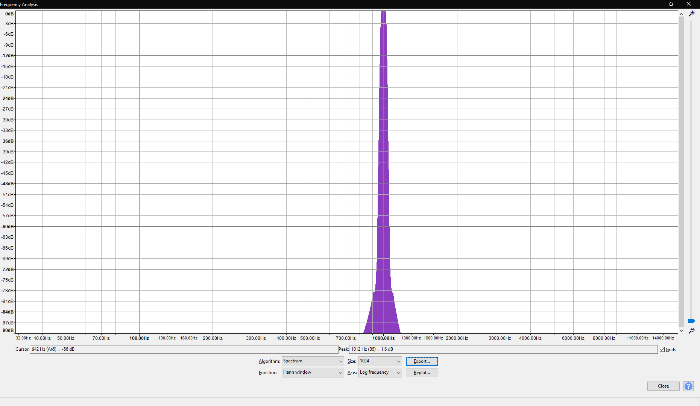

Musik:
 Rauschen (Vorsicht Laut):
Rauschen (Vorsicht Laut):
 Ich habe hier zu praat gewechselt da audacity die decibel angaben anders angibt und somit negative decibel werte
angegeben werden die erst umgerechnet werden müssten.
Ich habe hier zu praat gewechselt da audacity die decibel angaben anders angibt und somit negative decibel werte
angegeben werden die erst umgerechnet werden müssten.
public static WavFile verstaerken(WavFile wavFile, int db){
int validBits = wavFile.getValidBits();
long sampleRate = wavFile.getSampleRate();
long numFrames = wavFile.getNumFrames();
int channels = wavFile.getNumChannels();
int samples = (int)numFrames*channels;
short upper_bounds = 32767;
short lower_bounds = -32768;
for (int i = 0; i < samples;i++){
short sample = wavFile.sound[i];
double verstaerkungsFaktor = Math.pow(10, ((double)db/20));
double verstaerkung = sample * verstaerkungsFaktor;
short new_sample = (short)Math.max(lower_bounds, Math.min(upper_bounds, verstaerkung));
wavFile.sound[i] = new_sample;
}
return wavFile;
}
b)
3db verstärkung: 6db verstärkung: 9db verstärkung: 12db verstärkung:
c) 1khz sine wave verstärkt um 3,6,9db
3db verstärkung:
6db verstärkung:

9db verstärkung:
12db verstärkung:
 Clipping ausschnitte 3db, 6db, 9db und 12db verstärkung
Clipping ausschnitte 3db, 6db, 9db und 12db verstärkung

Aufgabe 2 Echo
Music Echo Mono: 10ms: 100ms: 200ms: 1000ms: Music Echo Stereo: 10ms: 100ms: 200ms: 1000ms: Speech Echo Mono: 10ms: 100ms: 200ms: 1000ms: Speech Echo Stereo: 10ms: 100ms: 200ms: 1000ms:
public static WavFile mono_echo(WavFile wavFile, double delay) throws IOException, WavFileException {
int validBits = wavFile.getValidBits();
long sampleRate = wavFile.getSampleRate();
long numFrames = wavFile.getNumFrames();
int channels = wavFile.getNumChannels();
int samples = (int)numFrames*channels;
int N = (int)((delay/1000)*sampleRate);
double verstaerkung = 0.6;
short[] echo = new short[wavFile.sound.length];
for(int i = 0; i < samples; i++){
if (i >= N){
echo[i] = (short) ((wavFile.sound[i]*0.5) + (0.5 * verstaerkung * wavFile.sound[i-N]));
}else{
echo[i] = (short)(wavFile.sound[i]*0.5);
}
}
wav_save(validBits, sampleRate, numFrames, channels, samples, echo,"C:\\tmp\\mono_echo.wav");
return wav_open("C:\\tmp\\mono_echo.wav");
}
public static WavFile stereo_echo(WavFile wavFile, double delay) throws IOException, WavFileException {
int validBits = wavFile.getValidBits();
long sampleRate = wavFile.getSampleRate();
long numFrames = wavFile.getNumFrames();
int channels = wavFile.getNumChannels();
int samples = (int)numFrames*channels;
int N = (int)((delay/1000)*sampleRate);
N *= 2;
double verstaerkung = 0.6;
short[] echo = new short[wavFile.sound.length];
for(int i = 0; i < samples; i++){
if (i >= N){
echo[i] = (short) ((wavFile.sound[i]*0.5) + (0.5 * verstaerkung * wavFile.sound[i-N]));
}else{
echo[i] = (short)(wavFile.sound[i]*0.5);
}
}
wav_save(validBits, sampleRate, numFrames, channels, samples, echo,"C:\\tmp\\stereo_echo.wav");
return wav_open("C:\\tmp\\stereo_echo.wav");
}
a)
N = Verzögerung * Abtastfrequenz
N = 10 ms * 44.1 kHz = 441 Abtastwerte
N = 100 ms * 44.1 kHz = 4410 Abtastwerte
N = 200 ms * 44.1 kHz = 8820 Abtastwerte
Aufgabe 3 Einfacher Filter
public static WavFile filter_add(WavFile wavFile) throws IOException, WavFileException {
int validBits = wavFile.getValidBits();
long sampleRate = wavFile.getSampleRate();
long numFrames = wavFile.getNumFrames();
int channels = wavFile.getNumChannels();
int samples = (int)numFrames*channels;
short[] wav = wavFile.sound;
short[] filtered_wav = new short[wav.length];
for (int i = 2; i < wav.length; i++){
filtered_wav[i] = (short) (wav[i] * 0.5 + 0.45 * wav[i-2]);
}
wav_save(validBits, sampleRate, numFrames, channels, samples, filtered_wav,"C:\\tmp\\filter_add.wav");
return wav_open("C:\\tmp\\filter_add.wav");
}
public static WavFile filter_sub(WavFile wavFile) throws IOException, WavFileException {
int validBits = wavFile.getValidBits();
long sampleRate = wavFile.getSampleRate();
long numFrames = wavFile.getNumFrames();
int channels = wavFile.getNumChannels();
int samples = (int)numFrames*channels;
short[] wav = wavFile.sound;
short[] filtered_wav = new short[wav.length];
for (int i = 2; i < wav.length; i++){
filtered_wav[i] = (short) (wav[i] * 0.5 - 0.45 * wav[i-2]);
}
wav_save(validBits, sampleRate, numFrames, channels, samples, filtered_wav,"C:\\tmp\\filter_sub.wav");
return wav_open("C:\\tmp\\filter_sub.wav");
}